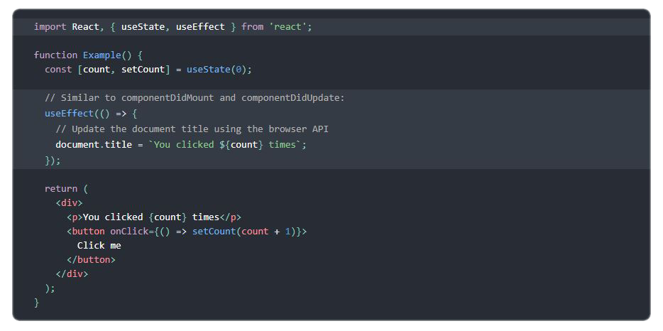
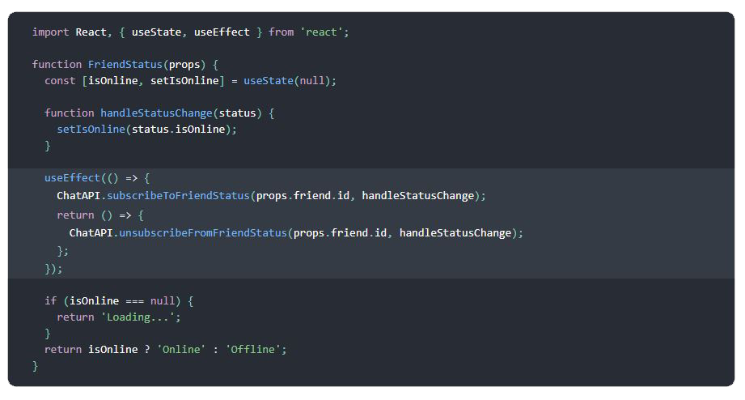
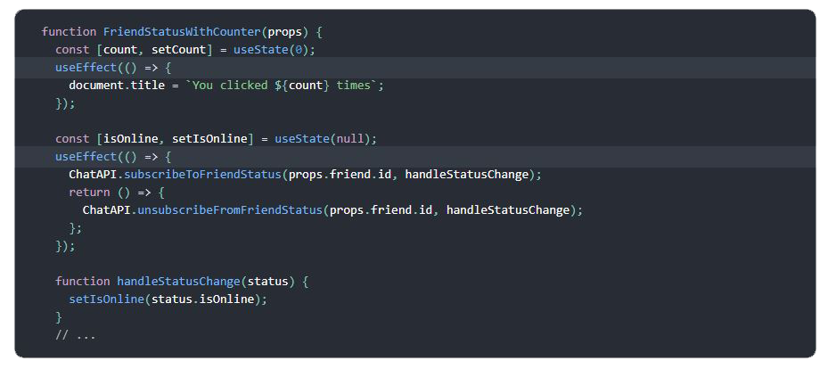

⚡️ Effect Hook
You’ve likely performed data fetching, subscriptions, or manually changing the DOM from React components before. We call these operations “side effects” (or “effects” for short) because they can affect other components and can’t be done during rendering.
The Effect Hook, useEffect, adds the ability to perform side effects from a function component. It serves the same purpose as componentDidMount, componentDidUpdate, and componentWillUnmount in React classes, but unified into a single API. (We’ll show examples comparing useEffect to these methods in Using the Effect Hook.)
For example, this component sets the document title after React updates the DOM:

×

When you call useEffect, you’re telling React to run your “effect” function after flushing changes to the DOM. Effects are declared inside the component so they have access to its props and state. By default, React runs the effects after every render — including the first render. (We’ll talk more about how this compares to class lifecycles in to know more .)
Effects may also optionally specify how to “clean up” after them by returning a function. For example, this component uses an effect to subscribe to a friend’s online status, and cleans up by unsubscribing from it:

×

In this example, React would unsubscribe from our ChatAPI when the component unmounts, as well as before re-running the effect due to a subsequent render. (If you want, there’s a way to tell React to skip re-subscribing if the props.friend.id we passed to ChatAPI didn’t change.)
Just like with useState, you can use more than a single effect in a component:

×

Hooks let you organize side effects in a component by what pieces are related (such as adding and removing a subscription), rather than forcing a split based on lifecycle methods.
Detailed Explanation
You Can Learn More About The State Hook On A Dedicated Page: Using The State Hook.